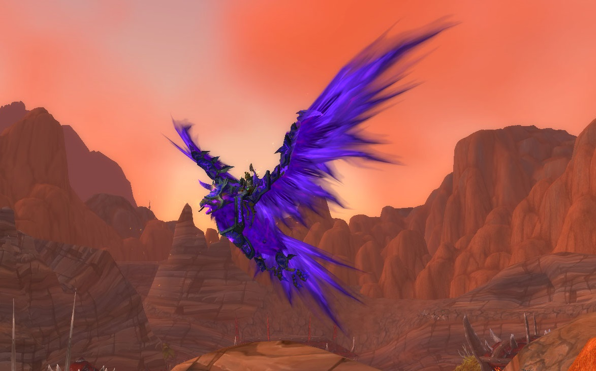
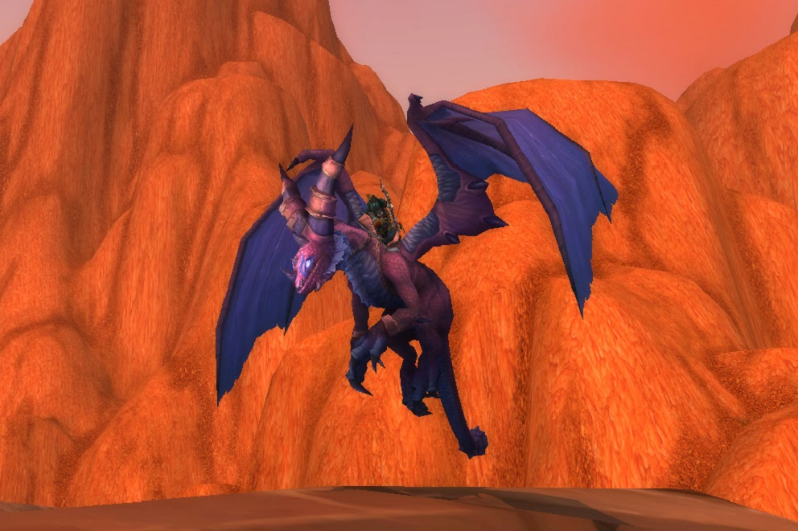
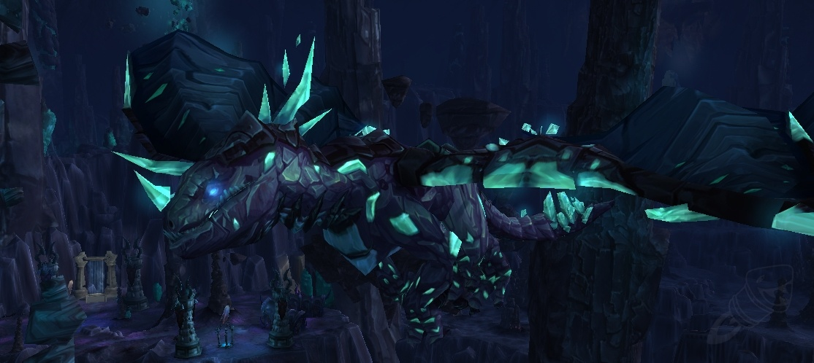
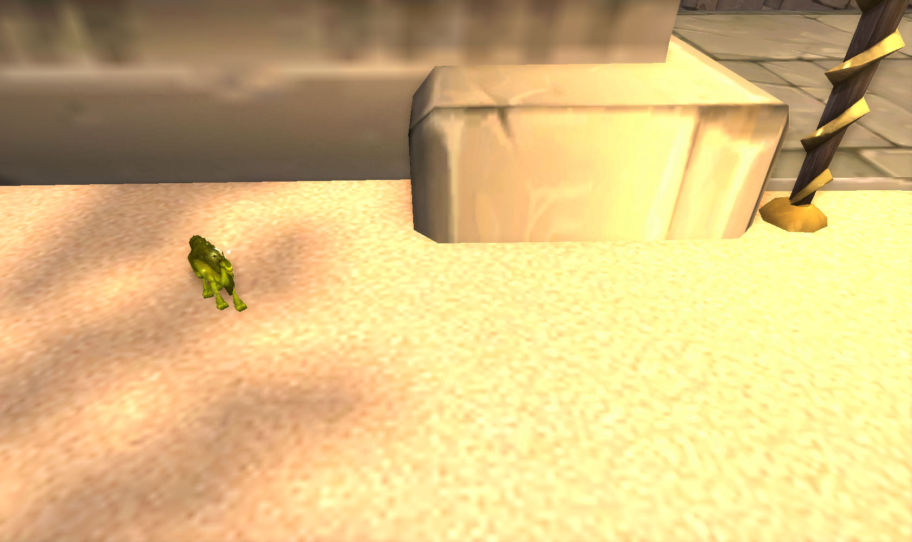

L'extension Cataclysm a également apporté au jeu de nouveaux modèles de montures, assez originaux.
Il existe maintenant des faucons hippocampes et autres joyeusetés tels que ... des nouveaux modèles de drakes ?!
Il vous suffit de lire ces articles pour tous les découvrir, ainsi que leurs moyens d'obtention !
Les faucons de feu
Un nouveau modèle décliné en deux coloris est apparu dans l'extension Cataclysm : le faucon dragon de feu, et celui de feu corrompu.
Les deux s'obtiennent dans le raid Les terres de feu mais de manières différentes. Celui de feu est un butin rare (1%) du dernier boss Ragnaros, tandis que le faucon de feu corrompu s'obtient en réalisant le meta-haut fait consistant à réaliser tous les haut-faits des terres de feu (Gloire au héros)
(Notons qu'a l'heure actuelle, il existe un troisième coloris nommé gangrefeu, qui s'obtient en possédant plus de 250 montures)

Faucon de feu corrompu Faucon de feu (Oeuf de Millagazor)
Les nouveaux modeles de drake (décidement !)
Les drakes à cornes
Avec Cataclysm apparait un tout nouveau modèle de drake sorti de nul part, les drakes à cornes ! Trois sont disponibles et proviennent tous du raid l'Ame des Dragons, raid où nous combattons le dragon le plus imposant : Aile-de-Mort.
Deux des drakes s'obtiennent sur ce dernier, le drake flamboyant avec un taux de 5% et la Suivante de la Lieuse de vie avec un taux de 1%.
Le dernier drake, l'émissaire du crépuscule, est la récompense du haut-fait Gloire au héros de l'Ame des Dragons.
Drake flamboyant

Emissaire du crépuscule
Ils possèdent tous un skin assez unique puisqu'ils sont les seuls drakes cornus du jeu, il est cependant regrettable que leurs coloris soient si peu nuancés.
Les drakes du vent
Quatre drakes ayant chacun pour nom un point cardinal font leur apparition :
-Le drake du vent du nord s'obtient sur le troisième boss Altairus du donjon La cime du Vortex à un taux avoisinant les 1%
-Le drake du vent de l'ouest s'obtient en terminant la réputation Tol'barad et en l'achetant contre 150 insignes obtenus en récompense des quêtes journalières de cette réputations
-Le drake du vent du sud s'obtient sur le boss Al'akir dans le raid Trone des quatre vents, à un taux de 1%
-Le drake du vent de l'est, quand à lui, est la récompense du haut-fait Gloire au héros des donjons de Cataclysm
Drake du vent du Nord Drake du vent de l'Ouest
Drake du vent du Sud Drake du vent de l'Est
De nouveaux monstres ultra-rares ...
Comme vous avez pu le constater sur la page concernant les montures de Wotlk, les monstres ultra-rares sont souvent les seuls trous dans les bestiaires des collectionneurs de monture de par leur mode d'obtention.
C'est ainsi que Blizzard, la société en charge du développement de Wow, en a rajouté trois !
Aeonaxx
Il y a tout d'abord Aeonaxx, dans le Tréfonds, qui a une chance sur trois d'apparaitre sur un point parmi 5 disséminés sur toute la carte. A sa place, vous avez une chance sur trois de ne rien voir apparaitre et la même chance de voir apparaitre un autre rare inutile.
Les différents points d'apparition d'Aeonaxx Un joueur ayant vu apparaitre le fameux monstre rare inutile ...

Aeonaxx
Poseidus
Dans la zone sous-marine Vash'jir, l'eau vous oblige à utiliser un hippocampe comme moyen de locomotion. C'est de cette idée qu'est apparu Poséidus, un hippocampe ultra-rare. Ce dernier possède le plus gros timer d'apparition du jeu puisqu'il est estimé entre 48 et 76h !
Pour compenser cela, il apparait à coup sûr à chaque fin de timer mais sur un point d'apparition parmi 5, étalés sur trois zones différentes ! De quoi se le faire voler sans s'en rendre compte ...
Les points d'apparition de Poséidus
Le dromadaire gris
Pour finir, il y a la monture la plus inutile donc indispensable : le dromadaire gris ! En Uldum, une zone complètement désertique, il existe 51 points d'apparitions possibles éparpillés dans les moindres recoins. Sur ces derniers apparait, au hasard et toutes les 6 heures, une minuscule statue de dromadaire.
Il vous faudra réussir à la trouver ce qui est déjà un challenge en soit, de par sa taille infime (invisible du ciel).
Vous pensez en avoir fini avec ce dromadaire une fois la statue entre vos mains? Eh bien non, puisqu'en cliquant dessus, vous avez seulement 5% de chance (oui oui) de vous faire téléporter devant le monstre rare donnant cette monture ..

Figurine de dromadaire La route optimisée afin de tenter de trouver la figurine